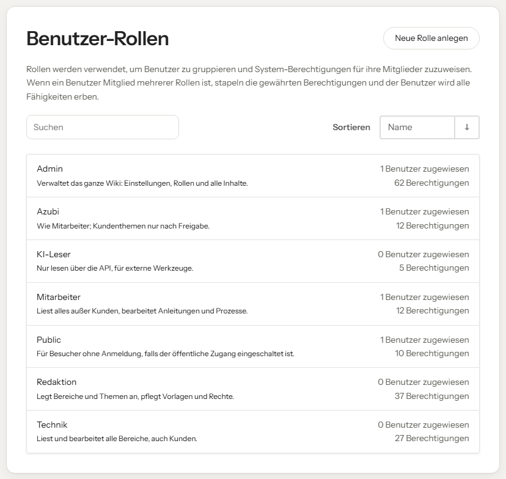

Konten im Wiki entstehen und verschwinden über den Anmeldedienst der Firma (Keycloak). Im Wiki selbst legt niemand Konten von Hand an: Die Rolle kommt aus dem Firmenkonto, den Berufstitel tragen Admins im Wiki ein.
Alle Personen, die sich mit ihrem Firmenkonto anmelden. Zuständig sind Admin und IT.
wiki-mitarbeiter, wiki-azubi, wiki-technik, wiki-redaktion oder wiki-admin.Die Rolle über die Gruppe in Keycloak; das gilt ab der nächsten Anmeldung. Den Titel im Wiki wie unten beschrieben; das gilt sofort.
Rollen im Wiki von Hand zu ändern bringt nichts: Bei der nächsten Anmeldung setzt das Wiki sie wieder auf die Gruppen aus Keycloak zurück.
Der Titel steht neben dem Namen, etwa in der Kopfleiste und bei „Zuletzt geändert von“. Admins tragen ihn unter Einstellungen → Benutzer bei der Person ein, im Abschnitt Berufstitel, und speichern. Die Farbe richtet sich nach der Stufe; Automatisch leitet sie aus dem Titel ab („Senior …“ wird blau, „Auszubildende“ grün).
| Stufe | Farbe | Zum Beispiel |
|---|---|---|
| Leitung | schwarz | Geschäftsführung, Bereichsleitung |
| Senior | blau | Senior Consultant, Teamleitung |
| Junior | türkis | Consultant, Junior Consultant |
| Azubi | grün | Auszubildende, Werkstudierende |
| Team | grau | alle anderen |
Sollen Titel stattdessen aus Keycloak kommen (Attribute titel und titel_stufe), richtet die Technik das ein. Dann überschreibt jede Anmeldung den Titel im Wiki.

Wer in keiner wiki-Gruppe ist, kann sich zwar anmelden, bekommt aber keine Rolle und sieht keine Inhalte.
Fällt der Anmeldedienst aus, stellt die Technik das Wiki kurz auf die eingebaute Anmeldung um und legt ein Notfallkonto an (php artisan bookstack:create-admin). Ablauf in der Entwicklerdokumentation, Kapitel „Anmeldung“.
| Rolle | Aufgabe |
|---|---|
| IT | Konten und Gruppen in Keycloak |
| Admin | Rollen und Berufstitel im Wiki, Konten löschen, Notfall-Zugang |
Gültig ab: Umstellung auf die Anmeldung mit dem Firmenkonto
Nächste Überprüfung: halbjährlich